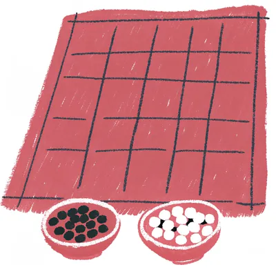

黒と白の石を交互に置いて、たて・よこ・ななめのどれかに、先に自分の石を5つならべたほうの勝ち。1回は10〜20分くらい。
リンクから開いたので、ルームコードは入っているよ。名前を入れて「参加する」を押してね。
画面共有でみんなに見せるための画面です。ルームには入らず、見るだけです。
1台の画面をみんなで見てあそぶ。石を置くのは、画面を動かす人。
時間を過ぎたら、CPU が代わりに置く。
参加のしかた
「ルームに参加する」で、名前とルームコードを入れてね
対戦しない人は、自分の画面で勝負を見られるよ。
その人の番には、ホストが代わりに置く。
時間を過ぎたら、CPU が代わりに置く。
ホストがはじめるのを待っているよ
ホストが次を決めるのを待っているよ
遊んでくれてありがとう。